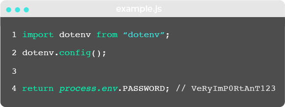
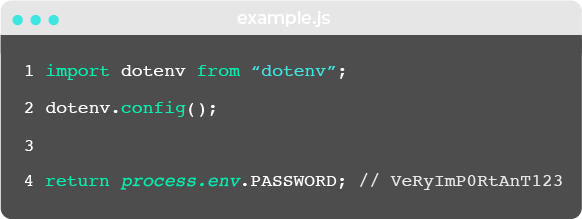

Currently under construction!
Option A:
Haven is an open-source secrets manager that abstracts away the complexity and overhead of secrets management for software engineers, so they can get back to development without compromising security. In this case study, we describe how we designed and built Haven, the trade-offs we made, and some of the technical challenges we encountered. But first, let's start with an overview of secrets.
Option B:
A major challenge when developing and deploying applications is safely handling secrets such as API keys and other credentials. A good secrets manager can help protect you from security breaches and compromises, and that's where Haven comes in.
Haven is an open-source solution for easily and securely managing your application’s secrets. Haven is designed for small teams whose developers work on multiple applications and in multiple environments. For the application developer, Haven makes it easy to securely store and retrieve secrets. For the administrator or team lead, Haven makes it easy to give a developer permission to just the secrets they need.
A secret is something you want to keep secret. More specifically, it's a sensitive piece of data that “authenticates or authorizes you to a system”, as Armon Dadgar, co-founder and CTO of Hashicorp, defined it [1]. For example, you may have a connection string that you pass to a database so you can authenticate a session and request data from it. Or you may have an API token that you supply when you make a call to your cloud provider so you can read and write from its storage. Both are in and of themselves some mechanism of access, and you don't want them falling into the wrong hands.
You probably have other sensitive information you’d like to keep secret too, like credit card or protected health information. But they’re not secrets if they don’t directly grant you access to a system. While any sensitive information should be stored securely, the scope of our discussion here is limited to application secrets.
Configuration is important because it influences how your application operates, but not all of it is really private. Let’s say your configuration defines parameters for a database connection that includes an adapter. The adapter connects your application to the database, but it doesn’t authenticate or authorize you in any way and your data won’t be compromised if it were to leak—so it's not a secret.
However, they're often misunderstood and mishandled. In 2019, researchers at the North Carolina State University scanned almost 13% of Github’s public repositories and found "not only is secret leakage pervasive–affecting over 100,000 repositories–but that thousands of new, unique secrets are leaked every day." [2] They noted it wasn't just inexperienced developers leaking secrets in hobby projects. Several large, prominent organizations were leaking secrets too, including a popular website used by millions of college applicants in the US and a major government agency in Europe. In both cases, they exposed their respective AWS credentials. See for yourself how common it is.
DigitalOcean had a bad day on April 5th, 2017 when they discovered their "primary database had been deleted" due to "an engineer-driven configuration error. A process performing automated testing was misconfigured using production credentials." [3] They announced they would have to drastically reduce access to the primary system. Clearly, giving developers over-privileged access to secrets can lead to honest but costly mistakes.
In 2019, Capital One had a data breach that affected over 100 million individuals due to a vulnerability related to configuration secrets involving AWS S3 buckets. The attacker exploited a misconfigured firewall to extract files in a Capital One directory stored on AWS's servers. [4] Perhaps unsurprisingly, bad actors and secrets don't make for good news.
The Twelve-Factor App methodology made popular the practice of storing configuration in environment variables to separate configuration from code. [5] Since secrets are often spoken about in the context of configuration, it may follow to store them in environment variables too.
Environment variables are separate from code and commonly set in files. For example, in a Node.js application, they're set in .env file and loaded into the environment for the application to use.
 

Some deployment and CI/CD tools provide a built-in way to set environment variables. Heroku, a popular Platform-as-a-Service, allows users to manually do so in a control panel. At a glance, it's convenient to store secrets in environment variables. They're easy to change between deploys without touching code and unlikely to be checked into a version control system by accident, plus they’re universal to every developer and agnostic to OS or stack. However, let's take a look at some problems.
Anyone who has access to the application or tool can read (and probably edit) secrets like in any other code or file. And while environment variables are separate from code, it’s still possible to accidentally check them into a version control system for anyone anywhere to see.
Regardless of how environment variables are set, they're leaky. Environment variables are implicitly available to all children processes, so they're passed to anything the application calls and nearly impossible to track by access or exposure. For example, they're commonly logged or printed in plaintext for debugging and error reporting. It may be hard for third parties to grasp the sensitive nature of environment variables that hold secrets, and it's hard to say what they'll do with this unintended access.
While encrypting a secret protects it from immediate threat, it isn’t a complete solution. You still need answer questions like: Do you store those encrypted secrets in a file, and is that file stored in version control? You might need a "master key" to unlock those secrets, but if so, how is that master key distributed?

"Every program and every privileged user of the system should operate using the least amount of privilege necessary to complete the job." - Jerome Saltzer [6]
The principle of least privilege is crucial. It states that anyone working on your applications should only have access to the secrets they need to do their work. But if you're on a small team, and you know everyone personally and trust their intentions, it can be tempting to not bother controlling access to your secrets, because security can get in the way of moving fast. You do need the principle of least privilege, but you also need to be thoughtful about how to easily grant access to those who need it, so that security doesn’t become yet another roadblock for developers.
There is a tension between security and productivity, especially when it comes to sharing secrets with other developers.

While it's convenient if a developer can, at any time, send secrets to another developer who, for whatever reason, isn't able to access the secrets they need, there is just no way to maintain control over your secrets if you do that. Engineering teams should accept a little inconvenience to gain a lot of security. Concretely speaking, they should accept that only a select one-to-few "admin" individuals should be able to grant access to secrets. On the other hand, a secrets management solution should get out of the way whenever possible.
Let's say we have developers Alice and Bob. Maybe Alice has containerized everything, but the containerized app still needs several passwords to run on Bob's machine. Does he just ask her for them? Will she post them somewhere? Or maybe Bob leaves your team: do you know which secrets he's accessed that you now have to update? Then, do you have to stop your applications, replace those secrets, and redeploy?
If you don't have process and security around your secrets, the problems keep stacking. Eventually, you'll find yourself with a big headache called secret sprawl.
Secret sprawl is what you have when your secrets are littered across your code, infrastructure, config, and communication channels. Secret sprawl means your secrets could be anywhere.
Secrets get sprawled across code, config, and communication channels.

Secrets get sprawled across your infrastructure.

Let's take a hypothetical team of four developers, and call them Alice, Bob, Charlie, and David. Suppose:
Without a system in place, you might do weird things to provide some measure of security. Going back to our fictional team, maybe Alice decides to take a screenshot of a secret and send that to Bob in Slack--and maybe she even goes back into Slack and deletes that screenshot once the recipient has got the secret. Or alternatively, maybe she puts that secret in a file and locks it with a password, sends the locked file over Slack and sends the password to Bob over some other communication channel, like email. When you have to get creative to share your secrets, they easily become even more sprawled.
To further complicate the picture, suppose the following plausible events occur:
When Alice quits, how do you ensure Alice doesn't retain access? Does Bob still have production credentials? When Emily joins, does she have to ask around to find what secrets she needs?
More likely, Emily won't even know she needs some secrets until she gets to work, finds out she needs some, and has to hunt them down. Without a system in place, she’s unlikely to get, in a complete and controlled manner, all the secrets she’ll need to do her work.
Let's add one more type of event to the mix, which will surely happen much more often than personnel changes:
How do you ensure Charlie's teammates use the updated version? And what about applications that depend on it? The old token is invalid, so applications will crash if they try using it. It may be a chore for Charlie to hunt down the people that need to know or the places where it needs to be updated.
Secret sprawl means you can't answer questions like these with any degree of confidence:
To prevent secret sprawl, you must have a single source of truth---one place where all your secrets live. Establishing this "single source of truth" can be called centralization. Centralization tames secret sprawl, and therefore also paves the way to gaining visibility and control around your secrets.

Previously, we showed that secrets might be sprawled across your infrastructure. Perhaps they are even passed down service-to-service in your pipeline. But you want it to look more like this:
After centralization, only your app has secrets, or rather, whatever service needs secrets will get only the secrets they need. You thereby reduce the attack surface area of your application.
In 2.3 we mentioned that encryption alone isn't a complete solution, but when you combine encryption with centralization, you're well on the way toward a great solution. With that in mind, let’s go over a few high-level encryption best practices, illustrated by the gif below.
First, you should encrypt client-side. This means secrets are encrypted before being transmitted across a network--so secrets never leave your machine unencrypted. That way, you don’t have to trust the party you’re sending it to, nor the communication channel you use. When it comes to security, it’s best to have a multi-layered strategy, so that even if one layer fails, the system is still secure. With that in mind, you should also use an encrypted communication channel, which is called encryption in transit. Encryption in transit can include any temporary stopping points between the client and the final destination. Finally, your storage device should also be encrypted. This is called encryption at rest.
A secrets manager is a system that helps you securely store and manage your secrets. Secrets managers are inherently centralized. They invariably use encryption in some way, but beyond that, they vary in the use case they are targeted for and in the features they offer.
There are multiple offerings, so you must choose somehow. What do you need to look for in one? First, a secrets manager must keep your secrets safe. To do that, it should encrypt your secrets. Second, how does it accommodate multiple users? How does it let you share access safely? Third, you need to know how to actually use it in your applications. How do applications actually get secrets? You might have to significantly adjust your workflow, depending on the solution you pick.
Either your application has to fetch the secrets it needs--so you have to write more application code--or your application is run in a certain context such that it already has the secrets it needs.
Using a .env file falls into this category. In NodeJS applications, you would import a ‘dotenv’ module in your application code, and then call a method on that module to load the env-file. A secrets manager might create a .env file or some other file that you have to stick out on your server. Be aware that such a solution itself contributes to secret sprawl! If you are going the distance and using a centralized secrets manager, you don’t want to fall back into secrets sprawl for that final step of getting secrets to your applications.
A second kind of secrets manager that falls into this category is storing your secrets in your git repos, in encrypted form. Mozilla has an open-source tool called SOPS that lets you do this. The downsides with this approach is there is no fine-grained access control, or logs, and it doesn’t adhere to separation of concerns (since secrets are much closer to config than code).
A third kind of secrets manager that falls into this category is making an API call within your code to fetch secrets. AWS has a product called Secrets Manager. One downside is you need to get familiar with AWS and set all groups and policies yourself.
What these kinds of secrets managers all have in common is that you must write application code to fetch secrets.
On the other hand, your application might also be run with the secrets it needs already available. For example, if you use an orchestration service, such as Puppet, or Docker Swarm, there will likely be a built-in way of specifying secrets, which will then be made available in the environment your application code executes in.
Another approach that falls in this category is what the secrets manager SecretHub does. SecretHub actually runs your application as a child process, and injects the secrets into the environment of that process.
This gives SecretHub some level of control---it can monitor the standard-out and standard-error streams of your application, which lets it redact secrets that you might accidentally be logging. This is the approach the Haven team ended up taking.
Vault is the most popular commercial solution. It's highly flexible and extensible; for example, it integrates with the storage backend of your choice, as well as the identity provider of your choice, and can integrate with a broad array of plugins. But Vault is widely regarded as complex, and can be overkill for many teams. Their own docs admit this, "Vault is a complex system that has many different pieces." It is probably the best choice if you need some of the features that only Vault offers, and if your team or organization has the expertise and bandwidth to manage the Vault beast.
Although Vault is dominant, there are other players on the market. Doppler is an early YC startup that launched in late 2020 whose focus is making it "super easy" to manage secrets. One thing that may give users pause is that secrets are sent plaintext to Doppler. EnvKey has a different security model--it takes a "zero trust" approach and encrypts secrets client-side before they are sent over the network. Like Doppler, EnvKey is easy to get started with, but it is not as feature-rich: for example, it lacks secret versioning and the ability to segregate permissions on a per-project basis. SecretHub also does client-side encryption, and is feature-rich, but complex. SecretHub also redacts secrets from stdout and stderr, which helps to prevent secrets being visible in logs locally and/or in any logs that might be shipped off to third parties.
Ultimately, all commercial solutions are third parties that you have to trust. Many teams prefer using open-source software for a variety of reasons, and when it comes to secrets management, there is one strong reason to: you have full control over the system.
There are open-source solutions out there, ranging from utility-like tools that tend to require you do a lot to get up and running, to more complete solutions with UIs and built-in access control. The latter, though, tend to be targeted toward specific use cases---for example, Confidant, which was developed by Lyft in 2015. It has a nice UI and intuitive access control, but it is Docker-centric and AWS-centric; it assumes you are using Docker, and also assumes you already use AWS roles for authorization. An example of a more utility-like tool is credstash which, like Confidant, uses AWS under the hood. But it has limited functionality, e.g. no logs and no ability to segregate secrets by project and environment, and it also requires a fair bit of setup, e.g. you need to have an AWS KMS key and your developers all need AWS credentials.
AWS released their Secrets Manager service recently (2018) and if you're AWS-native, this may be the way to go. However, if your team doesn't already use AWS services, it's not exactly a plug-and-play solution. Navigating the AWS ecosystem presents a steep learning curve in itself, and Secrets Manager does not come with access control set up for you out of the box.
Existing solutions can be categorized in (very) broad strokes as ‘lightweight’, or ‘heavyweight’, where lightweight emphasizes ease of quickly getting started using it, and heavyweight emphasizes features.
Even in the lightweight category, there’s some diversity. For example Doppler emphasizes usability, while arguably EnvKey emphasizes security more. The heavyweight ones, such as SecretHub and Vault, tend to offer more features, but at the cost of greater complexity.
We saw room for an open-source solution that is easy to get started with and has an interactive UI. Other open source solutions exist but none of them are ideal for getting immediately productive with. Either there’s a lot of setup required, or they are really built for a specific use case. So we built a new solution that is secure but also straightforward and lets you get started in minutes. When building Haven, we had small teams in mind: teams in which developers might work in multiple environments, including production---in which case it’s extra important to have fine-grained access control.
After we did our research on what makes for a good secrets manager and identified the components we’d need to build one, we turned to AWS because they have trusted and long-standing services for each of our development needs. Although we use AWS under the hood, you don't need cloud expertise to productively use Haven---the Haven Admin needs an AWS account, that’s it.
#TODO! Add new visual
Secrets need to be encrypted and decrypted with an encryption key, and since "successful key management is critical to the security of a cryptosystem" (Wikipedia), we opted to use the highly-vetted AWS Key Management Service (AWS KMS). This is the only AWS service Haven uses that does not have a free tier. KMS costs $1 per month per key, so if you use Haven you can expect to pay a dollar a month to AWS.
We chose to use AWS Identity and Access Management (IAM) for another crucial piece of our architecture: authentication and authorization. Every time an entity makes a request to a non-public AWS resource, the request goes through IAM first. IAM will deny requests implicitly unless the entity is explicitly authorized to that resource. Using IAM as the gatekeeper for all storage and encryption logic meant that we could ensure only entities we authorized could read secrets, write secrets, and so on.
The architecture of a Haven instance can be roughly split up into two components: the client side and the corresponding AWS infrastructure side. On the client side, each user--be it a a Haven Admin, a developer or an application server--uses the Haven application to interact with the instance’s secrets. All of these users have Haven installed on their personal machines and are using Haven to interact with the same AWS infrastructure, albeit with varying levels of permissions.

We'll briefly walk through the three scenarios you'd face when working with Haven. We'll show you how you can get Haven set up as an Admin, including how to integrate Haven into your projects. Then, we'll take a look at how you’d add another user to Haven to work on your projects. Finally, we'll show you how you’d use Haven to provide secrets to your app on a production server.
The Haven Admin is the person responsible for creating every project and every user, assigning permissions to said users, and reviewing access logs.
To get started, you’d need to install the haven-secrets-cli package from npm. We also have a UI that you can download separately. Both tools, the CLI and the UI, use the same Haven Core package behind the scenes. After installing the npm package, you’d run haven setup, which assigns you as a Haven Admin.
Above, you see that Haven creates a file called havenAccountFile which contains your Haven credentials. It also sets up your AWS account to provision the backend resources for creating projects and their environments, adding users, setting permissions, and adding/updating secrets. Your AWS account is the only place your secrets will ever be stored with Haven. There is no external Haven server with your secrets.
Now that you have Haven set up on our computer, it’s time to start
integrating your projects with Haven. Let’s say you have an
application called 'BlueJay' that you want to integrate with Haven.
As the Haven Admin, you are the only person who will be able to
create/delete projects under this AWS account. After you run the
haven createProject BlueJay, Haven provisions a DynamoDB table and
set of IAM permission groups for your application BlueJay.
Next, you add all your secrets for the BlueJay project.

Your project BlueJay is now integrated with Haven.

When you create a user either through the UI or CLI tool, Haven will provision temporary credentials for this user that will be saved as to your computer. You'll then send this file to the intended user.

Next, your developer will need to install the haven-secrets-cli package from npm to their personal computer. Let’s switch over to the new user’s point of view.
Above, the dev has received the temporary credentials you sent them and has stored the temporary credentials in a haven folder on their personal computer. Haven users don't even need an AWS account since they'll be working as a user in your AWS account with only the permissions you grant them. Initially, the dev cannot interact with any projects and secrets. The dev must run haven userSetup on their computer after placing their havenAccountFile in their home directory. Haven will then fetch their permanent credentials.
They will now be able to start interacting with Haven based on the permissions you give to them. You'll be able to grant them read and/or write permissions for secrets on a per-project, per-environment basis. (Granting permissions is an admin-only capability.) Depending on their permissions, they will be able to create, update, and/or read secrets, and also run the application locally using haven run. Below we depict this new user being able to fetch a secret that the admin stored.

If the dev is not authorized to that particular secret, they’ll be denied access:

Finally, let’s look at how you can start using Haven in your
applications. First, we assume you run your application on a server,
or rather, in an environment that has a filesystem. The Haven Admin
then creates a Haven User for them, since every “server user” you
create under this AWS account is just another Haven User, like
“developer users”. The Haven Admin creates a user and receives a
havenAccountFile as you saw in the previous section on Adding Users.
Next, the Haven Admin must SSH into the server where your app will
run and install Haven globally, or as a dependency in your project,
as well as place the havenAccountFile in the home directory of the
operating-system user that the application will run from. Then, the
Haven Admin will run haven userSetup, just as the dev
did in the previous section.
This server is now able to start interacting with Haven based on the
permissions you gave it. You can run your application with haven
run.

In section 3.2, we noted that there are three questions you should ask about any secrets manager. The decisions we made and the challenges we faced in building Haven can be described pretty well by answering those questions:
The very notion of encrypting your secrets has an inherent problem: what do you do with the encryption key? Assume you use symmetric encryption, so the encryption key both encrypts and decrypts your secrets. But then that encryption key is itself a secret---and a particularly sensitive one, since it can unlock all of your secrets. You might try to encrypt that key with another key, but that would be yet another key that you have to encrypt.
One way to solve this problem is to have a trusted third-party service store an encryption key that you don’t have physical access to. Instead, you dictate who has permissions to use it to perform encryption and decryption operations. For Haven, that trusted third-party service is the battle-tested AWS Key Management Service (KMS). We use KMS to store this key, which we’ll call a “master key”, and limit encryption/decryption access to it via AWS IAM policies. We don’t need to worry about safely storing this master key since AWS handles that. Now let’s see why “master key” is an appropriate name (hint: it’s not the only encryption key used).
Key wrapping is an encryption best practice and refers to the technique of using two or more layers of keys to protect your data. It involves generating a unique data encryption key for each secret and encrypting the secret using that encryption key. Then the data encryption key is encrypted by the master encryption key. The encrypted key and encrypted secret are then stored until decrypted later. To decrypt your data, you perform this process in reverse: decrypting the data encryption key with the master key and then using the data encryption key to decrypt your secret data. Key wrapping is also sometimes called envelope encryption.
There are some advantages to this: first, it’s harder to brute force the encrypted data since each is encrypted using a different key; second, you reduce the attack surface area, because the master key never sees your plaintext data--only plaintext data encryption keys--so an attacker would need access to both your secrets storage and the master key, and in addition, there’s one less instance of your plaintext secrets traveling along the wire. You may be wondering what you do with these encrypted data encryption keys: you store them alongside the encrypted secret itself, often in the same database row.
It's a common saying in software that you shouldn't "roll your own crypto"---you should use a vetted cryptographic library. We chose to use AWS's own client-side encryption library, the AWS Encryption SDK, because it adheres to cryptography best practices (like key wrapping). The AWS Encryption SDK requires a master key, so Haven uses the master key in AWS KMS that it created for you in initial setup.
When you add or update a secret, it's first encrypted on the client using the SDK and then sent encrypted in transit via TLS to be stored on Amazon DynamoDB, where it is encrypted at rest. Thus Haven follows the best practices of encrypting your secrets client-side, in transit, and at rest.
The diagram above shows Haven’s encryption scheme from start to finish. First, to encrypt a datum, a unique data encryption key is generated and is used to encrypt the secret on the client side as seen in the top right. Then, as shown in the top left, that data encryption key is encrypted using the singular master key stored in KMS. Both of these encrypted pieces of information are encrypted in transit via TLS and sent to DynamoDB to be stored alongside each other as shown in the bottom of the diagram. Thus we can see that Haven encrypts your data client side, in transit and at rest up on DynamoDB.
Since Haven sits in the critical path of your application being served, low latency was important to us. High availability was also important. We concluded we did not have any other particular technical needs when it came to storage---scalability was not a concern for us, since small teams will never need tens of thousands of concurrent connections to haven, nor will they need to store billions of secrets. We chose Amazon DynamoDB, because it's a sane default that fits our needs, has good documentation, high availability, and single-digit-milliseconds latency.
Above, we see that first, Haven first makes a request to the AWS encryption SDK library to encrypt a secret. The SDK checks that the caller has the IAM permission to encrypt, and if so, generates a data encryption key, encrypts the secret value with it, and then encrypts the data encryption key with the master key. Then, Haven takes this encrypted data, and (if the user has permission) stores it in DynamoDB. Haven also stores the secret’s name, version number and whether the secret is flagged, in that same row.
Above, we see the inverse: Haven fetches an encrypted secret from DynamoDB, then decrypts it using the Encryption SDK.
A secrets manager instantiated as a web application can face the same security hazards as any other application you run over the public web, which we thought best to avoid. The choice to run the Admin/Developer UI Dashboard locally was something we wanted to do from the beginning for this reason; we were inspired by EnvKey, whose FAQ states:
Unfortunately, it's still not possible to implement true zero-knowledge end-to-end encryption on the web. Apart from a fundamental chicken-and-egg problem when it comes to server trust, there's no way to protect against all those ever-so-convenient browser extensions that so many folks have given full-page permissions.
A second reason we run the UI app locally is to make it clear that Haven does not have a backend “Haven” server, so we could not snoop on your secrets even if we wanted to.
Enforcing the principle of least privilege is important, and Haven makes this easy by limiting access along three dimensions: by project, environment, and by action, where an action is read-only or read-write.
Creating credentials for a new haven user means creating a new secret. After all, those Haven credentials may permit the ability to read and write secrets! So how could we ensure that we didn't cause our own secret sprawl?
Our solution was to create temporary credentials only good for one
hour. These credentials don’t have permissions to do anything except
request permanent credentials, so the user must ‘change their
password’ before they can do anything else. We use an AWS Lambda
function to enforce the one-hour limit. If someone doesn’t use their
temporary credentials within an hour, the Haven Admin will need to
create a new user. The flow is illustrated below: first, the Haven
Admin adds a user, either in the UI or the CLI, then Haven downloads
a file with temporary credentials and the Haven Admin sends this to
the new user. Second, the new user places the Haven file in their
home directory and runs haven userSetup. Haven invokes a lambda
using those temporary credentials, the lambda checks if they’re
still valid, and if so, returns permanent credentials which Haven
then puts into the user’s haven file. At this point, the new user
would need to tell the Haven Admin that they set up their account,
so that the Haven Admin could add them to projects and environments.
The Haven Admin can easily revoke any permission for any user or even delete users. When a user's permission to some secrets is revoked, those secrets are flagged, and the next time the Haven Admin or a developer uses the UI Dashboard, they will see a red flag next to the secret, indicating they should rotate (change) that secret.
Getting secrets to your application should not itself contribute to your secret sprawl, and it should be as easy as possible to do. We settled on an approach similar to what the existing secrets manager SecretHub does.
When you use SecretHub with your application, SecretHub runs your application as a child process and injects the application’s secrets into that child process as environment variables.
Haven works the same way. This has three benefits. First, your
application’s secrets aren't stored in a file somewhere on the
application server (so no secret sprawl in that regard). Second, due
to the nature of child processes, Haven can redact any secrets
leaking out on stdOut or stdErr (we explain how here [#TODO!: put
link]). Finally, this approach makes it easy for the developer: they
can simply install the Haven package and change their application’s
start command to include haven run.
There are pros and cons of using environment variables. Some experts believe environment variables should not be used for secrets, because the environment can get leaked or inherited: a logging or debugging tool may dump the environment, or a malicious child process may inherit and read your secrets. Those in the "pro env vars" camp claim that alternatives are at least as insecure as env vars, and that the advantages of env vars outweigh the potential disadvantages. Env vars do have one major security advantage: they die when their process dies. Any environment variables you set for that application are for that process, and will disappear once your application stops running---leaving no trace behind, quite unlike a file. Besides the security advantage, env vars also have two major pragmatic advantages: 1) they’re language agnostic, and effectively OS agnostic as well, and 2) many developers are familiar with environment variables.
When we surveyed existing solutions, we noticed that most dedicated secrets managers either permit you to store secrets in env vars if you want to (e.g. Vault), or just always put secrets into env vars (e.g. EnvKey). And outside of dedicated secrets managers, if you're using Docker's or Kubernetes's built-in ways of handling secrets, you'll be setting them as env vars. Whether you use environment variables or not is only a small part of the overall security picture---centralization and encryption are arguably far more important. We decided to use environment variables.
Secrets stored in environment variables are at risk of showing up in logs via processes that dump the whole environment. We wanted to mitigate that risk. We did so by spawning your application as a child process.
A process can simply be thought of as a running program. When you run your application, it runs in a process. Many programming language’s runtime environments allow for the creation of subprocesses, known as child processes. Node.js is one such runtime, and Haven uses the spawn method from the 'childprocess' library built into Node. When using the spawn method, you specify the program you want to run and that program is run as a child process. The stdIO of the child process is piped to and from the parent process: stdIn is piped in to the child from the parent, and stdOut and stdErr are piped out from the child to the parent.
This is what allows us to provide a simple wrapper for your application, making for an easy-to-use secrets manager, as well as what lets us intercept any logging of secrets on stdOut and stdErr and redact them for extra security.
So how does this child process technique fit into the bigger picture? In the example shown below, note that 'BlueJay' is the Haven project, 'prod' is the environment and 'node blueJay.js' is the command that will be ran by Haven.

Haven will fetch the secrets for the project/environment combination and then spawn a child process via the command you passed to Haven using the spawn method from the Node child process library. The secrets are injected into this child process as environment variables, making them available for the application. Then as the application runs, Haven intercepts both stdOut and stdErr, redacts logged secrets and then logs the redacted result.

We'd like to extend our work to include: [#TODO!: cut to 3-4 and discuss with team]
#TODO! - get references done
[1] #TODO!: find the source of this quote
[2]https://www.ibm.com/security/data-breach
[3]
[4]https://www.ndss-symposium.org/wp-content/uploads/2019/02/ndss2019_04B-3_Meli_paper.pdf
[5]https://www.digitalocean.com/blog/update-on-the-april-5th-2017-outage/
[6]https://en.wikipedia.org/wiki/Principle_of_least_privilege#cite_note-6
[7]https://cheatsheetseries.owasp.org/cheatsheets/Logging_Cheat_Sheet.html#data-to-exclude
[8] https://12factor.net/config
[9]https://www.vaultproject.io/docs/internals/architecture